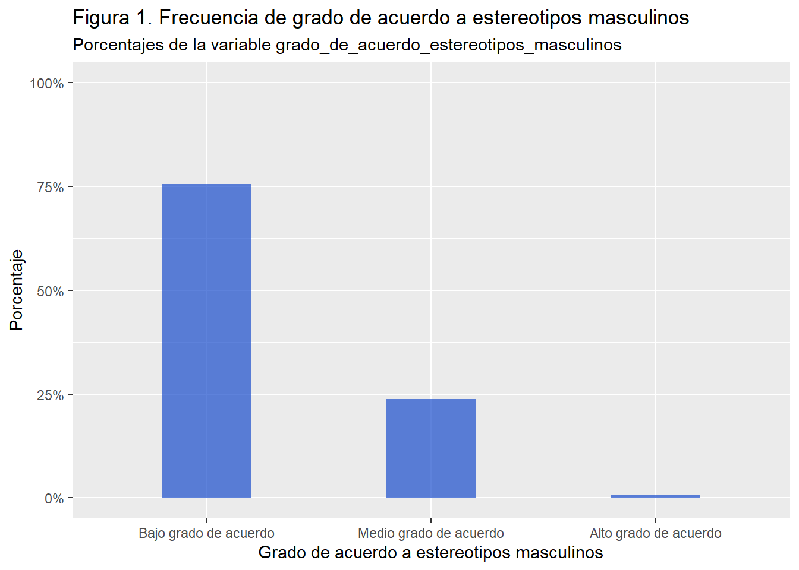
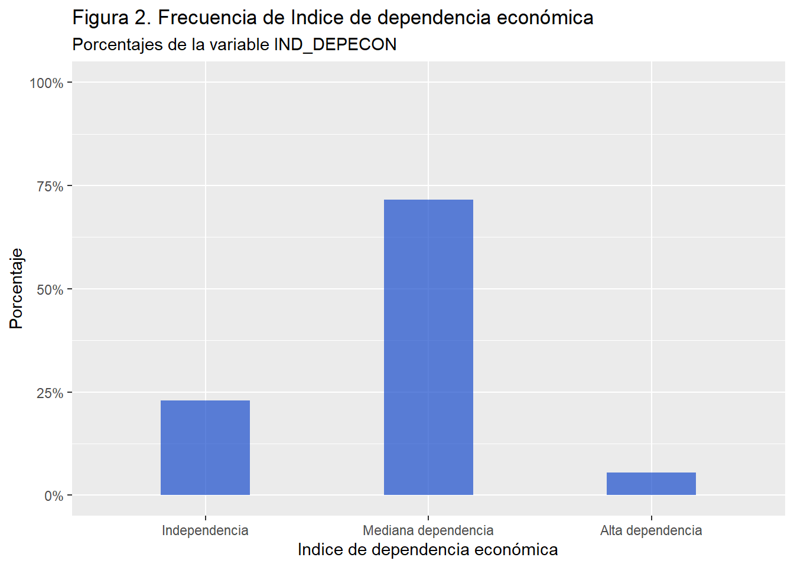

En la sociedad, existen diversas nociones de muchas cosas, los sujetos se encuentran dentro sistemas con significados compartidos, es decir, en una realidad social intersubjetiva. Los estereotipos son unas de las tantas nociones que hay, en este caso específico se abordarán los estereotipos masculinos y la relación de aquello con los índices de dependencia económica de la mujer respecto al hombre.
Ahora bien, se entenderá por estereotipos masculinos todos aquellos rasgos (características) y capacidades que de un modo tradicional se consideran de el hombre teniendo como fundamento “la suposición de que algunas tareas o actitudes son propias de un sexo e impropias del otro, pero no se forman a partir de la reflexión sino que generalmente se consolidan” (Toca and Carreta 2008). Los rasgos y capacidades atribuidos, serían características del hombre como: proveedor, fuerte, competitivo, valientes, dominantes, independientes, entre otros. Por otro lado, la dependencia económica se entenderá como aquella que es “visibilizada cuando los ingresos de la mujer son controlados por el cónyuge, y no se le permite de manera libre adquirir o comprar.” (Virgilio, n.d.a).
Si tenemos en cuenta que la dependencia económica da lugar y potencia una diversidad de violencias contra la mujer (Rodríguez Enríquez 2012) y que, la adherencia a estereotipos masculinos (y de género en su totalidad) “[…] oprimen y envilecen el correcto desarrollo de las aptitudes de la mujer. Intervienen gradualmente en la construcción femenina, una construcción que debe ser demolida…” (Bituga-Nchama 2021). Es pertinente abordar como la dependencia económica se ve agravada por los estereotipos masculinos, ya que ambos fenómenos sociales suelen ser –en gran medida– difícil de percibir por la población general, siendo así factores antagonistas de la calidad de vida de la sociedad, pero principalmente la de las mujeres.
En este marco, dado lo que la literatura señala respecto a que la dependencia económica da lugar y potencia una diversidad de violencia contra la mujer, lo cual sumado al rol que juegan los estereotipos masculinos en la realidad social, nos lleva a plantearnos la siguiente hipótesis: a mayor grado de acuerdo con los estereotipos masculinos, mayor prevalencia de dependencia económica, y viceversa.
Para el desarrollo del análisis estadístico, se utilizó la base de datos de la Tercera Encuesta Nacional de Violencia Intrafamiliar contra la mujer y delitos sexuales (2017). La base de datos a manipular corresponde a una submuestra que contiene a las 1000 mujeres encuestadas en la Región Metropolitana, con un rango etario de 15 a 65 años. Se eligieron dos variables pertinentes a la problemática, por un lado el índice de acuerdo a los estereotipos masculinos (IND_MASC) y, por otro, el índice de dependencia económica (IND_DEPECON). Por razones prácticas el índice de acuerdo a los estereotipos masculinos que va desde las puntuaciones del 0 al 60, donde 0 es nada de acuerdo y 60 muy de acuerdo, se ha recodificado en tres categorías: (1) 0-20; (2) 21-39; (3) 40-60. Aquello para poder visualizar mejor los datos en los gráficos y el respectivo cruce de variables en la tabla de contingencia.
Análisis descriptivo.
1- Descriptivos de la variable: Grado de acuerdo a estereotipos masculinos.
#### 1. Primeros pasos ##### Desactivamos notación científicaoptions(scipen =999) #Desactivar la notación científica# Establecer el directorio de trabajosetwd("C:/Users/lucas/Documents/GitHub/Trabajo-1-OFC-R/Optativo R - Lucas G. y Alex G")# Instalar los paquetes a utilizar: la instalación de paquetes se realiza una sola vez.#install.packages("pacman")# Cargar los paquetes#pacman::p_load(dplyr, # Manipulación de datos#haven, # Apertura de BBDD#sjmisc,# Visualización de datos#ggplot2, # Creación visual de datos mediante gráficos#summarytools, #Herramientas para la construcción de tablas#kableExtra, # Construcción de tablas#knitr,# Construcción de tablas#sjPlot) # Gráficoslibrary(pacman) #llamamos al paquete#Ahora podemos instalar paquetes mas fácilmentepacman::p_load(dplyr, car, tidyverse, haven, plotrix, sjlabelled, sjmisc, sjPlot, kableExtra, labelled, xlsx, ggplot2, summarytools, knitr)# Carga de base de datosBase_VIF<-read_sav ("Estadistica II, Practico 3_BBDD_VIF (2017)_RM_para practico.sav")# Encuesta Casen 2022#View(Base_ENDH)names(Base_VIF)
porcentaje <- prop*100#2.9 Crear la tablatabla <-data.frame("Categoria"=names(fa),"Frecuencia"=as.numeric(fa),"Proporción"=as.numeric(prop),"Porcentaje"=as.numeric(porcentaje))#2.10 Crear fila de los totales para frecuencia, proporción y porcentajetabla_fila_total <-data.frame("Categoria"="Total","Frecuencia"=sum(fa),"Proporción"=sum(prop),"Porcentaje"=sum(porcentaje))#2.11 Unir tabla 1 con fila totaltabla1 <-rbind(tabla, tabla_fila_total)#### 3. Gráficos ##### Recodificar las categorías de la variable Monto de jubilacion o pension de vejez con PGU (agrupar en cuatro categorías)Base_VIF <-mutate(Base_VIF, grado_de_acuerdo_estereotipos_masculinos =case_when(IND_MASC >=0& IND_MASC <=20~1, IND_MASC >=21& IND_MASC <=40~2, IND_MASC >=41& IND_MASC <=60~3))# Etiquetar los valoresBase_VIF$grado_de_acuerdo_estereotipos_masculinos <-factor(Base_VIF$grado_de_acuerdo_estereotipos_masculinos,levels =c(1, 2 ,3),labels =c("Bajo grado de acuerdo", "Medio grado de acuerdo", "Alto grado de acuerdo"))levels(Base_VIF$grado_de_acuerdo_estereotipos_masculinos)
[1] "Bajo grado de acuerdo" "Medio grado de acuerdo" "Alto grado de acuerdo"
############################ 3.2. Graficos de barras de frecuencias absolutas para la variable grado_de_acuerdo_estereotipos_masculinos### 3.3. Gráficos de barras barras de frecuencias relativas para la variable grado_de_acuerdo_estereotipos_masculinos <- Se hara uso solamente de este grafico de barras en el trabajo escrito (Por cuestiones de preferencia y evitar repetición de informacion)ggplot(Base_VIF, aes(x =factor(grado_de_acuerdo_estereotipos_masculinos))) +geom_bar(width =0.4, fill=rgb(0.1,0.3,0.8,0.7),aes(y = (..count..)/sum(..count..))) +scale_x_discrete("Grado de acuerdo a estereotipos masculinos", na.translate =FALSE) +scale_y_continuous("Porcentaje", labels=scales::percent, limits=c(0,1)) +labs(title ="Figura 1. Frecuencia de grado de acuerdo a estereotipos masculinos",subtitle ="Porcentajes de la variable grado_de_acuerdo_estereotipos_masculinos")
Warning: The dot-dot notation (`..count..`) was deprecated in ggplot2 3.4.0.
ℹ Please use `after_stat(count)` instead.

En primer lugar, los estadísticos referentes al grado de acuerdo a estereotipos masculinos por parte de las mujeres encuestadas, señalan que alrededor del 75% del total de la muestra tiene un bajo grado de acuerdo a estos estereotipos; mientras que alrededor del 24% presenta un medio grado de acuerdo; y menos del 1% poseen un alto grado de acuerdo a los estereotipos masculinos. El bajo grado de acuerdo posee gran frecuencia siendo así aquella la moda. En general, es posible decir que las mujeres no poseen gran acuerdo con los estereotipos masculinos. Aquello sugiere que las mujeres rechazan en gran medida las nociones machista y un pequeño grupo acepta los roles tradicionales del hombre y, por ende, el de la mujer.
2- Descriptivos de la variable: Índice de dependencia económica.
### 3.3. Gráficos de barras barras de frecuencias relativas para la variable IND_DEPECON <- Se hara uso solamente de este grafico de barras en el trabajo escrito (Por cuestiones de preferencia y evitar repetición de informacion)ggplot(Base_VIF, aes(x =factor(IND_DEPECON))) +geom_bar(width =0.4, fill=rgb(0.1,0.3,0.8,0.7),aes(y = (..count..)/sum(..count..))) +scale_x_discrete("Indice de dependencia económica", na.translate =FALSE) +scale_y_continuous("Porcentaje", labels=scales::percent, limits=c(0,1)) +labs(title ="Figura 2. Frecuencia de Indice de dependencia económica",subtitle ="Porcentajes de la variable IND_DEPECON")

En cuanto a los estadísticos del Índice de dependencia económica, estos señalan que la moda de los datos corresponde a la categoría de “mediana dependencia económica” con alrededor de un 70% del total de la muestra. La categoría de independencia económica es la segunda con más frecuencia relativa con alrededor de un 24% y, por último, la categoría de Alta dependencia económica, es la menos frecuente con alrededor de un 5% del total de la muestra. Todo esto sugiere que la mayoría de mujeres de la muestra posee una mediana dependencia económica respecto a sus parejas. Por otro lado, podemos ver una gran distancia entre los datos de las tres categorías, con una diferencia de casi el 20% entre la alta dependencia junto a la independencia y de alrededor del 46% de esta última con la mediana dependencia, existiendo una distribución bastante heterogénea.
3- Cruce entre las variables: Grado de acuerdo a estereotipos masculinos e Índice de dependencia económica.
#### 4. Tabla de contingencia ####tabla_contingencia <-tab_xtab(var.row = Base_VIF$IND_DEPECON, var.col = Base_VIF$grado_de_acuerdo_estereotipos_masculinos,title ="Figura 3. Tabla 1. Tabla de contingencia: Indice de dependencia econonomica segun Grado de acuerdo a estereotipos masculinos.", var.labels =c("Indice de dependencia economica", "Grado de acuerdo a estereotipos masculinos"),show.row.prc =FALSE, show.cell.prc =FALSE, show.col.prc =TRUE, show.summary =FALSE)tabla_contingencia
Figura 3. Tabla 1. Tabla de contingencia: Indice de dependencia econonomica segun Grado de acuerdo a estereotipos masculinos.
Indice de
dependencia
economica
Grado de acuerdo a
estereotipos
masculinos
Total
Bajo grado de
acuerdo
Medio grado de
acuerdo
Alto grado de
acuerdo
Independencia
179 24.3 %
44 19 %
1 14.3 %
224 22.9 %
Mediana dependencia
528 71.5 %
166 71.6 %
5 71.4 %
699 71.5 %
Alta dependencia
31 4.2 %
22 9.5 %
1 14.3 %
54 5.5 %
Total
738 100 %
232 100 %
7 100 %
977 100 %
En la tabla de contingencia se puede observar como la mayor cantidad de datos se centra en la categoría “mediana dependencia económica” junto a la categoría “bajo grado de acuerdo” a los estereotipos masculinos, representando así que el 71,5% de que mujeres poseen bajo grado de acuerdo a los estereotipos masculinos poseen una mediana dependencia económica. Esto resulta interesante, ya que según la hipótesis planteada, se esperaría que el grupo de mujeres con bajo acuerdo a estereotipos masculinos tengan mayor frecuencia en la categoría de “independencia” económica. Por lo cual, al tener mayor frecuencia en la categoría de “mediana dependencia” económica aquello no se alinea a la hipótesis.
Este contraste podría sugerir que, independiente del grado de acuerdo a los estereotipos masculinos y, por consiguiente, del pensamiento y la subjetividad de la mujer, aquello no resulta determinante en cómo se reproducen las estructuras sociales que perpetúan los roles y estereotipos de género, desembocando en una desigualdad sistemática contra la mujer. En los datos, si bien el 24,3% de mujeres que tienen un bajo acuerdo y a su vez independencia económica, esto no representa gran cantidad de los datos, habiendo así una mayor concentración de mujeres con bajo grado de acuerdo a los estereotipos masculinos en la categoría de mediana dependencia económica que, en definitiva, tiende a menos autonomía económica de la mujer.
Por el lado de las mujeres que poseen un medio grado de acuerdo a los estereotipos masculinos, tenemos que la mayor frecuencia (71,6%) se encuentra en una mediana dependencia económica. Lo cual se podría alinear a priori con nuestra hipótesis, pero en el panorama general dado lo evidenciado anteriormente esto no corresponde.
Conclusiones.
En primera instancia, al observar los estadísticos y realizar las interpretaciones, obtenemos que la hipótesis planteada no se condice con los datos. En lugar de que, el porcentaje de mujeres que tenían un bajo acuerdo a los estereotipos masculinos se concentrará en una situación de independencia económica, la frecuencia se concentró más en la categoría de mediana dependencia económica. Lo cual como planteamos, evidencia que no necesariamente hay una congruencia entre los pensamientos y las ideas que se pueda tener de la realidad social con respecto a lo que sucede definitivamente. Este hallazgo resulta bastante relevante, ya que existe la problemática de que aun cambiando el pensamiento entre las generaciones –ya sea mujeres u hombres– si bien puede dar paso a cambios sociales, en los datos concretos al menos no se refleja lo mismo. En este sentido, se reconoce lo fundamental que es cambiar el ideario colectivo en miras del bien común, sin embargo, aquello no basta por sí solo. En su lugar, aquello debe ir acompañado de otras medidas con énfasis en las estructuras sociales; como bien pueden ser cambios o nuevas políticas públicas como el acceso igualitario a fuentes de ingresos (reducción de la brecha salarial, empleos, bonos, etc), educación no sexista, entre otros.
En este marco, podemos ver desde una mirada Bourdesiana y complementar lo dicho anteriormente –respecto a la educación no sexista– con la idea de la capacidad generativa que tiene el lenguaje para representar realidades que tengan sentido para las personas a lo que, por consiguiente, según la teoría se plantea que:
“El lenguaje actúa generando mecanismos de poder y de normalización de la realidad representada en la colectividad e interacción, respondiendo a estructuras que se institucionalizan y permiten mantener un control del flujo del capital lingüístico y simbólico, y manteniendo la restricción o elaboración de sentidos, en función de los intereses de algunos grupos.” (Rodríguez Parra and Peláez Elizalde 2018).
Es decir, el lenguaje no es solo aquello que permite que las personas puedan pensar y se comuniquen sin más, sino que también permite que las personas construyan realidades compartidas, establezcan relaciones de poder y reproduzcan normas sociales. Desde esta perspectiva, el lenguaje no es neutral, sino que está cargado de significados y valores que reflejan y refuerzan las relaciones de poder existentes en la sociedad. Esta mirada ayuda a observar críticamente discursos (meritocracia o inclusive de empoderamiento) que se enfoquen en las capacidades de los individuos para cambiar su realidad, los cuales llevan a ignorar o invisibilizar factores externos a la individualidad y que están más arraigados en la realidad social estructural; de modo que aquello, a su vez, supondría una presión y responsabilidad –en este caso– a las mujeres mismas.
Por último, la literatura señala al respecto señala que:
“Cuando los roles de género afectan el control y acceso a los recursos y reducen la capacidad de las mujeres para actuar y tomar decisiones, se incrementa su vulnerabilidad a la violencia, incrementando la brecha de desigualdad de género y económica.” (Virgilio, n.d.b).
Lo cual reafirma lo primordial que resulta frenar la reproducción de estructuras sociales que perpetúan la desigualdad mediante la dependencia económica y la violencia contra la mujer que conlleva esta; condicionando entonces la capacidad de aquellas para lograr una autonomía económica e inclusive dando trabas en el desarrollo de sus vidas mismas.
Bibliografía.
Toca, I. G., & Carreta, F. N. (2009). Estereotipos masculinos en la relación de pareja. Enseñanza e investigación en psicología, 14(1), 37-45. https://www.redalyc.org/pdf/292/29214103.pdf.
De Virgilio, M. E. (2024). Dependencia económica de la mujer¿ Un campo fértil para la perpetuación en un ambiente de violencia? Relatos de mujeres asistidas en el Juzgado de Faltas de Barranqueras (Doctoral dissertation, Universidad Nacional de La Plata. Facultad de Humanidades y Ciencias de la Educación). https://www.memoria.fahce.unlp.edu.ar/library?a=d&c=tesis&d=Jte2748.
Bituga-Nchama, Pedro. 2021. “Estereotipos de Género En La Construcción de La Mujer Fang: Una Educación Patriarcal Para La Sumisión.”Cátedra 3 (3): 143–60. https://doi.org/10.29166/catedra.v3i3.2465.
Rodríguez Enríquez, Corina. 2012. “La cuestión del cuidado: ¿El eslabón perdido del análisis económico?”Revista de la CEPAL 2012 (106): 23–36. https://doi.org/10.18356/9241f4b8-es.
Rodríguez Parra, Mery, and Gloria Peláez Elizalde. 2018. “El lenguaje y su importancia en las interacciones para una educación no sexista.”Revista Saberes Educativos, no. 1 (November): 31. https://doi.org/10.5354/2452-5014.2018.51602.
Toca, Isabel García, and Fernanda Nader Carreta. 2008. “Estereotipos Masculinos en la Relación de Pareja.”Revista Internacional de Psicología 9 (01): 1–11. https://doi.org/10.33670/18181023.v9i01.49.
Virgilio, María Eugenia De. n.d.a. “Dependencia económica de la mujer ¿Un campo fértil para la perpetuación en un ambiente de violencia? Relatos de mujeres asistidas en el Juzgado de Faltas de Barranqueras.”
———. n.d.b. “Dependencia económica de la mujer ¿Un campo fértil para la perpetuación en un ambiente de violencia? Relatos de mujeres asistidas en el Juzgado de Faltas de Barranqueras.”